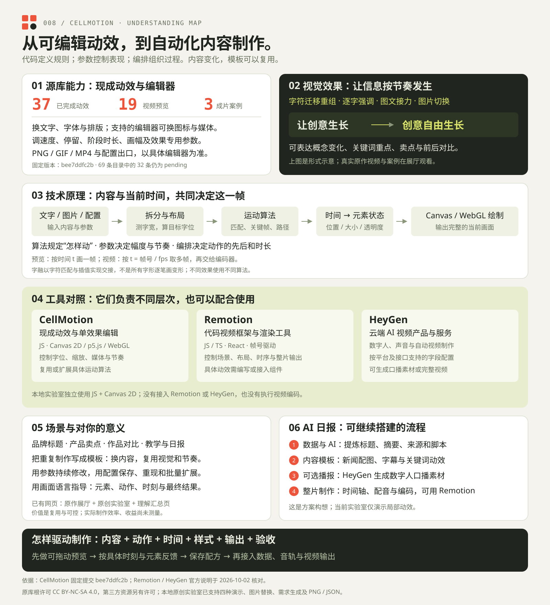

UNDERSTAND THE WHOLE PICTURE
从一个动效，理解一套制作流程。
我们逐步确认的共同理解：代码定义运动规则，参数控制表现，时间编排把它们组织起来。内容可以每天变化，视觉模板可以重复使用。



01 / WHAT THE SOURCE PROVIDES
源库提供什么，能看见什么？
CellMotion 是一组可编辑动效和对应工作台。选现成运动，换自己的文字与素材，再修改样式和节奏。
以提交 bee7ddfc2b 的 动效目录与案例页面为依据；不是对上游实时数量的承诺。
迁移、重组与逐字强调
字融让相同字符迁到新字位，删字缩小、新字长大；字阶用逐字大小和位置变化突出重点。
看字融与字阶 →文字与图标接力
文字、内置图标或支持的媒体一起参与画面，适合把产品卖点分成几拍表达。
看图标与产品场景 →前后对比与空间切换
图片对比、快门与翻转让切换有明确的发生时刻，可用于修图前后、商品与作品展示。
查看媒体类动效 →可编辑的范围
文案、字体、字号、字距、位置、画幅、速度、停留与效果专用参数；支持媒体的编辑器可替换图片、GIF、背景等。PNG、GIF、MP4 和配置出口的支持情况，以具体工作台为准。
目前以单动效编辑为主，站内拼接器尚未开放；通用网页组件在研究版本中仍标为规划中。部分“用于 AI”菜单能输出配置与提示词，接入生成或播放流程仍需核验。工作台说明 ↗
02 / WHAT DRIVES THE IMAGE
底层是代码与时间驱动的绘制。
源库有自己的动效实现；当前原创实验室使用 JavaScript + Canvas 2D，没有接入 Remotion 或 HeyGen。
配置 + 当前时间 t → 元素状态 → 一帧画面
文字与素材先拆成单元、测量并布局，再根据算法和时间计算位置、缩放、透明度。Canvas 2D 或 p5.js / WebGL 绘制结果，不同效果使用不同规则。
在字融中，相同字符按 key 配到未占用的目标字位，再插值移动；它不是所有字形逐笔画变形。字阶则使用字形框关键帧与阶段时间映射。字融源码 ↗ · 字阶源码 ↗
一个具体例子 / 匀速移动
让一个字在 2 秒内，从 x=100 移到 x=300。
0 秒x = 100→1 秒x = 200→2 秒x = 300
缓动会改变中间的速度分配。预览按时间绘制；视频导出按「帧号 ÷ fps」取多帧，再交给编码器。
决定怎样动：迁移、打字、放大、碎片聚合。
决定表现：内容、幅度、速度、颜色、画幅。
决定过程：先后、开始时刻、持续和停留。
03 / SAME LANGUAGE, DIFFERENT LAYERS
和 Remotion、HeyGen 的差别。
CellMotion 与 Remotion 都可以用代码控制画面，封装范围不同；HeyGen 提供云端 AI 视频制作。它们可以组合，也有部分能力重叠。
| 比较维度 | CellMotion | Remotion | HeyGen |
|---|---|---|---|
| 定位 | 具体动效与编辑器集合 | 代码视频框架与渲染工具 | AI 视频产品与云端服务 |
| 实现方式 | 自行编写 JS 动效算法，使用 Canvas 2D 等浏览器绘制技术 | JS / TS 与 React，按当前帧计算场景画面 | 通过平台和接口配置、调用生成与制作能力；本研究未核验其内部模型架构 |
| 你控制什么 | 所选效果的文案、字位、媒体、样式与运动参数 | 场景组件、布局、逐帧运动、时间与整片渲染流程 | 脚本、人物、声音、背景、素材与平台支持的制作字段 |
| 交付范围 | 单动效预览及所支持的 PNG / GIF / MP4 / 配置 | 网页预览、图像序列及渲染后的视频等 | 数字人口播、生成素材或平台制作的完整视频 |
| 在日报里可承担 | 片头、标题交接、关键词、图文切换 | 组织新闻场景、素材、时序与视频输出 | 生成主播口播，或使用其自动视频制作流程 |
| 扩展方式 | 增加参数、组合阶段或修改具体运动算法 | 编写与复用组件，接入素材、数据和渲染流程 | 使用平台及接口开放的能力；精细控制范围需按具体功能核验 |
Remotion：React 与帧驱动原理、渲染 API。HeyGen：脚本与人物场景配置、AI 视频制作说明。日报分工为基于这些能力的方案建议。
“都是 JS”说明什么？
Remotion 是 JS / TS 生态的一套库，核心基于 React。当前实验室用原生 JS 和 Canvas。语言相同，可以借用相同的时间计算思路，但接入已有动效仍需要适配绘制与素材载入。用 JS 调用云端视频 API，也不等于掌握服务内部的运动或生成算法。
04 / WHAT WE HAVE ACTUALLY BUILT
我们这个网页，已经提供了什么？
原库研究与原创教学扩展各有入口，功能范围清楚可查。
先看真实效果
原作视频、完整已完成目录、分类筛选、三支成片案例、按需嵌入的原编辑器、原理示意与源码链接。
已实测原编辑器中文修改和 PNG 导出；原作媒体与编辑器需要联网。进入原作展厅 →自己改，理解计算
四种可编辑演示、文字与图片替换、样式与时间参数、播放和时间轴、阶段算式、需求生成、PNG 和 JSON 保存／载入。
37 项浏览器检查通过。这里没有执行 AI 调用或视频编码，也没有接入两家平台。进入动效实验室 →建立完整制作思路
一张可下载总览图、源库能力与效果、原理、三者比较、现有网页功能、个人价值、日报流程和提问方法。
流程与场景建议来自能力分析；自动日报、批量视频、配音与长片拼接尚未实现。查看与保存总览图 ↑05 / WHAT THIS MEANS FOR YOU
把重复制作，变成可复用的规则。
你可以用画面语言指导制作，再把稳定的视觉和节奏保存成模板。
从内容和动作出发
说明让什么元素在什么时刻、以什么方式变成什么结果。制作时再把它转换为布局、运动规则和参数。
每天换内容，沿用设计
标题、图片、日期与摘要作为输入；模板复用排版与节奏。适合研究日报、课程章节、产品发布与品牌片段。
逐层增加，而非全部重做
先开放参数，再组合动作，最后增加新算法、数据输入和视频输出。模板能成为更完整流程中的一个模块。
这代表可复用与可控的制作方式，实际效率和业务收益尚未实测。使用原库做商业项目时，应核对其根许可 CC BY-NC-SA 4.0 与具体第三方资源授权；借鉴思路并独立实现，与直接使用原库代码或素材的许可判断需要分别处理。源库许可 ↗
06 / A POSSIBLE AI DAILY WORKFLOW
AI 日报，可以怎样搭起来？
这是可继续实现的分工方案。当前网页提供局部动效与教学，没有已经接通的自动日报生产线。
数据与内容
接入新闻来源，整理日期、标题、摘要、配图和出处；AI 辅助生成口播稿，保留核对环节。
待接入视觉模板
给新闻场景排版，安排标题、图片、关键词和字幕的运动，让替换内容仍适应画幅。
现有实验室示范局部可选声音与主播
接入配音；需要人物播报时，可用 HeyGen 生成口播素材，再放入制作流程。
待接入整片与输出
组织场景顺序、音轨与总时间轴，用 Remotion 等方案渲染、编码；再增加批量和命名规则。
待实现你可以这样提出下一步需求
请做一个可复用的 AI 日报模板：输入日期、三条新闻的标题、摘要、配图和来源。先提供可拖动时间轴的网页预览，让标题逐次出现，关键词放大强调，图片保持比例；开放颜色、画幅和每条新闻时长。先用明确标注的示例数据验收，再接入真实数据、配音与 MP4 输出。
完整需求交代六项：内容、动作、时间、样式、输出、验收。第二轮指出具体时刻、元素和希望发生的变化；可以在实验室生成需求作为起点。
研究与比较核对日期：2026-10-02。源库固定提交 bee7ddfc2b；官方平台能力可能更新。源库导出支持以具体工作台为准；本轮原库 GIF / MP4 为源码核对，未做导出实测。原创实验室的配方与 PNG 已做实际导入导出验证。